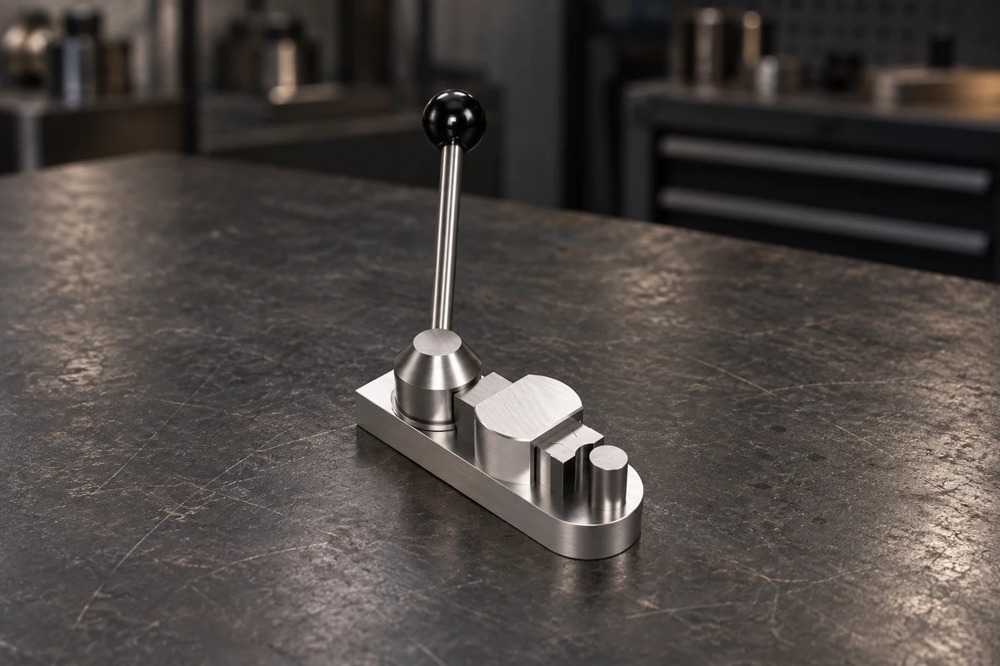
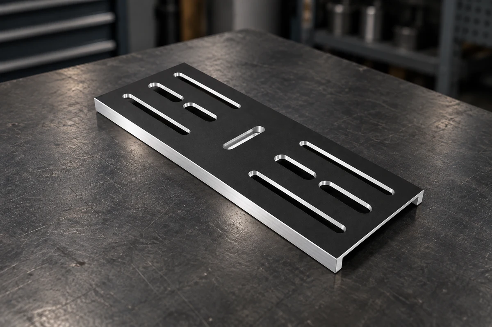
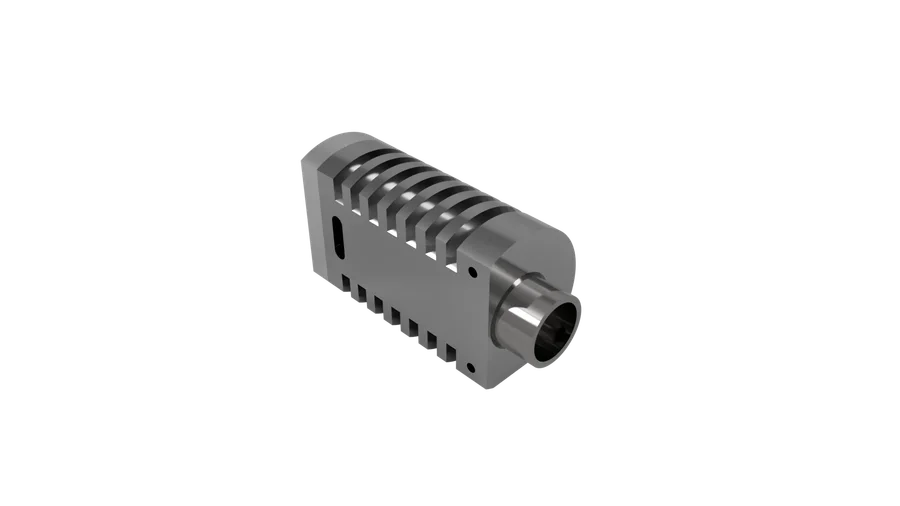
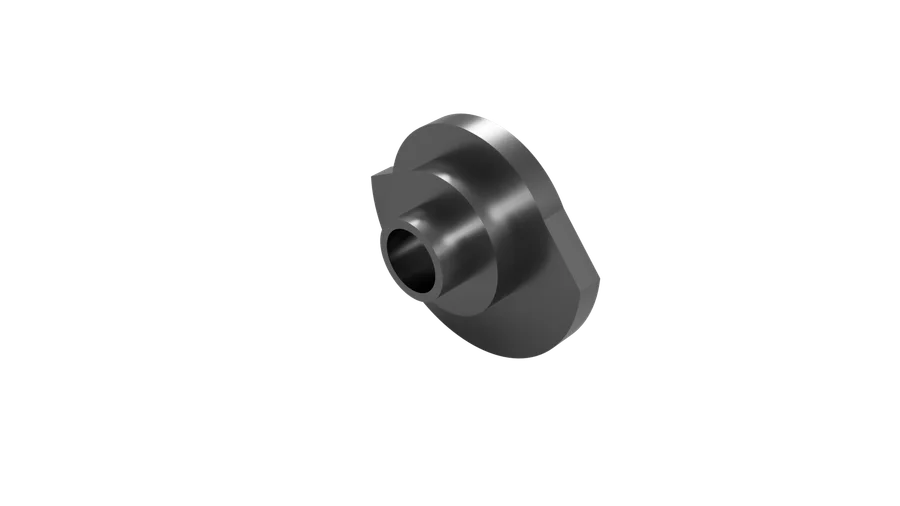
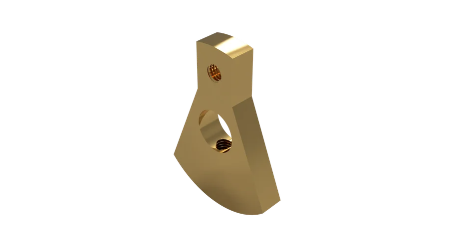
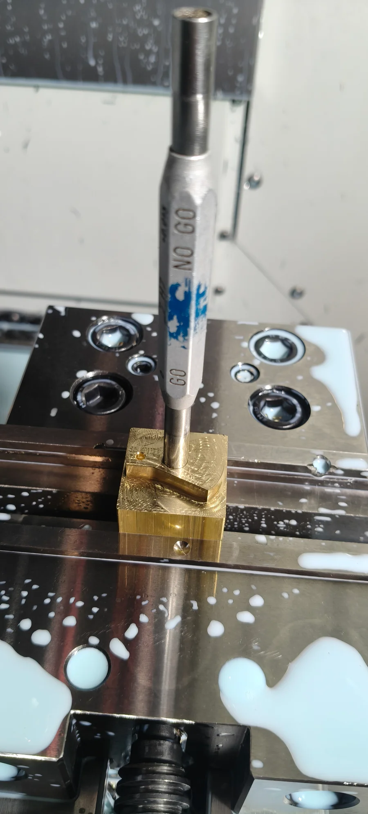
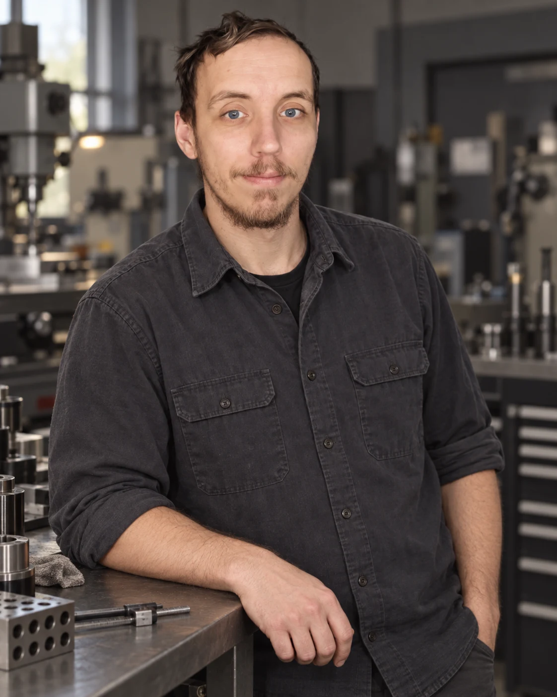

HOVEDPROJEKT / 001
Flame Eater Engine
En modelmotor med selvfremstillede dele og indkøbte kuglelejer. Arbejdet krævede særlig omhu med pasningen mellem cylinder og stempel.
Se projekt og dokumentation
FINMEKANIK · MANUELT OG CNC
Jeg hedder Glen Cilinder-Hansen og er finmekanikerstuderende. Datum Prototyping er min portfolio: et indblik i mit håndværk, mine projekter og min udvikling ved maskinerne.
FORVENTET SVENDEBREV · APRIL 2027
01 / LIGE NU
Finmekanikeruddannelsen
med skoleoplæring.
Modellering, CAM
og postprocessering.
3-akset CNC-fræsning
på skolens maskiner.
Manuel drejning
og grundlæggende håndværk.
02 / UDVALGTE PROJEKTER
Tre forskellige opgaver.
Konstruktion, bearbejdning og kontrol.
En modelmotor med selvfremstillede dele og indkøbte kuglelejer. Arbejdet krævede særlig omhu med pasningen mellem cylinder og stempel.
Se projekt og dokumentation
En manuel ringbøjer i aluminium og stål. Her var fokus at gøre konstruktionen stivere, så den bedre kunne modstå belastningen under bukning.
Se projekt
En CNC-fræset opspændingsplade med aflange spor. Projektet handler om planhed, spændinger i materialet og rækkefølgen af bearbejdningen.
Se projekt og dokumentation03 / PROCESSEN
Et kig på detaljerne
bag projekterne.




04 / MENNESKET BAG
Jeg er i skoleoplæring på finmekanikeruddannelsen ved TEC Frederiksberg. Her arbejder jeg med skoleopgaver og opgaver for eksterne kunder. Jeg er især optaget af samspillet mellem konstruktion, fremstilling og de små detaljer, der får en del til at fungere.
FORVENTET SVENDEBREV · APRIL 2027

“Jeg elsker at gå fra en tanke på papir til en færdig del i hånden.”Glen Cilinder-Hansen
05 / MIG I VÆRKSTEDET
Jeg kan bidrage med både digital forberedelse og praktisk arbejde ved maskinerne. Min tilgang er at forstå opgaven, arbejde omhyggeligt og kontrollere undervejs.
Jeg bruger Fusion 360 til CAD og CAM og har erfaring med både manuel bearbejdning og CNC fra min uddannelse. Jeg arbejder med sammenhængen mellem tegning, opspænding og fremstilling.
Det hjælper mig med at vurdere, hvordan en del kan fremstilles i praksis.
Jeg kontrollerer mål og afprøver pasninger undervejs, så jeg kan justere, mens jeg arbejder. Målingen og delens funktion skal hænge sammen.
Jeg bruger dokumentation til at holde styr på krav, fremgangsmåde og kontrol.
Jeg arbejder selvstændigt inden for det, jeg har erfaring med. Nye opgaver giver mig mulighed for at udvide mine færdigheder og blive mere sikker i mine valg.
Jeg er stadig under uddannelse og tager erfaringerne fra værkstedet med videre til næste opgave.
Fusion 360 · Haas Mini Mill · Haas ST-10 · Deckel FP1 · Weiler Matador
06 / KONTAKT
Har du en jobmulighed, en mindre opgave eller et spørgsmål til mit arbejde? Send mig en mail. Du kan også bruge formularen til at lave et udkast.
Skriv til mig på
Du har ændret dine valg. Brug “Lav beskedudkast” igen for at opdatere teksten. Dine egne rettelser bliver da erstattet.